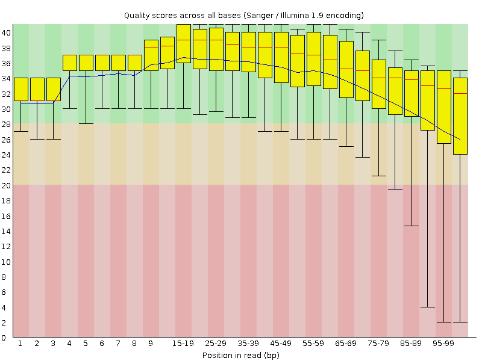
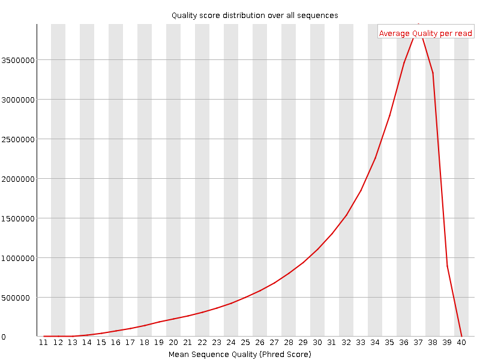
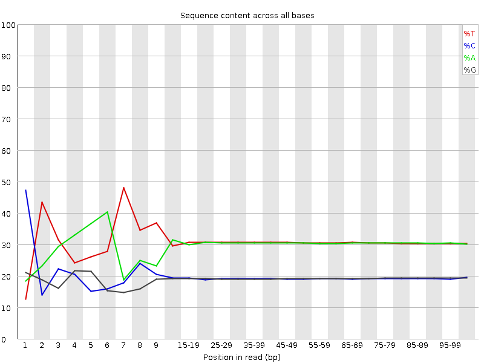
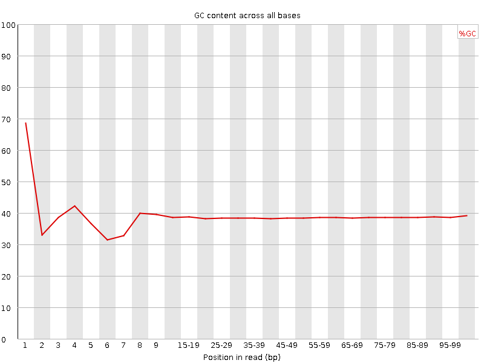
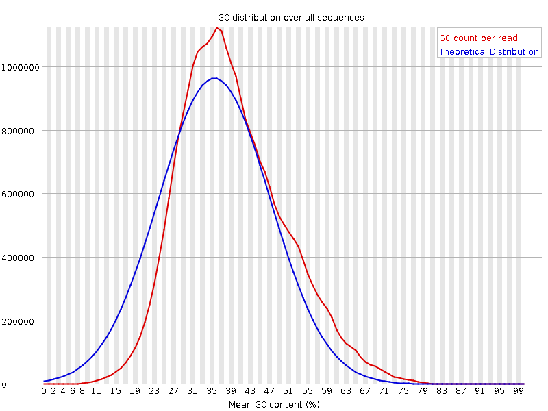
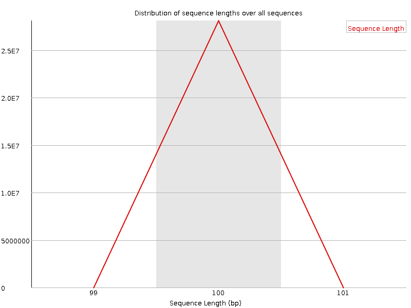
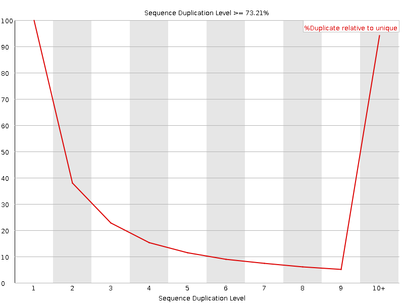
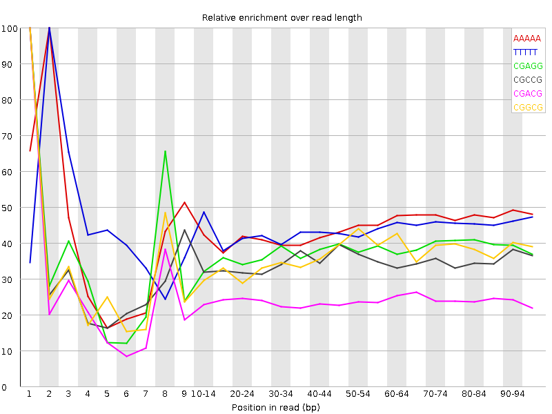

![[OK]](Icons/tick.png) Basic Statistics
Basic Statistics
| Measure | Value |
|---|---|
| Filename | c1.2.fq |
| File type | Conventional base calls |
| Encoding | Sanger / Illumina 1.9 |
| Total Sequences | 28103477 |
| Filtered Sequences | 0 |
| Sequence length | 100 |
| %GC | 38 |
Per base sequence quality

Per sequence quality scores

![[FAIL]](Icons/error.png) Per base sequence content
Per base sequence content

Per base GC content

![[WARN]](Icons/warning.png) Per sequence GC content
Per sequence GC content

Per base N content

Sequence Length Distribution

Sequence Duplication Levels

Overrepresented sequences
No overrepresented sequences
Kmer Content

| Sequence | Count | Obs/Exp Overall | Obs/Exp Max | Max Obs/Exp Position |
|---|---|---|---|---|
| AAAAA | 17461280 | 2.4903634 | 5.633541 | 2 |
| TTTTT | 17864510 | 2.3983011 | 5.4333773 | 2 |
| CGAGG | 2312365 | 2.0203037 | 5.3373013 | 1 |
| CGCCG | 1510365 | 2.0176601 | 5.815902 | 1 |
| CGACG | 2280055 | 1.9598688 | 8.054484 | 1 |
| CGGCG | 1409475 | 1.9138246 | 5.2489643 | 1 |
| CGCGG | 1320310 | 1.7927538 | 5.748959 | 1 |
| CTTCT | 5233775 | 1.7386256 | 5.842056 | 1 |
| CGCGA | 1947620 | 1.6741173 | 5.902723 | 1 |
| CTCGA | 3030905 | 1.6294314 | 9.31076 | 1 |
| CTTCC | 3049795 | 1.5936793 | 5.8442345 | 1 |
| CGAGA | 2831345 | 1.5659937 | 5.595871 | 1 |
| CGATC | 2887410 | 1.5522878 | 5.266806 | 4 |
| CAAAA | 6980475 | 1.547234 | 5.0676594 | 1 |
| CTTTT | 7275175 | 1.536368 | 7.335501 | 1 |
| ATCGA | 4411585 | 1.5260683 | 5.2449646 | 6 |
| CTGGA | 2749690 | 1.5025403 | 6.807864 | 1 |
| CGAAG | 2708250 | 1.4979109 | 5.5163264 | 1 |
| CTTCG | 2812030 | 1.4935814 | 7.3818903 | 1 |
| CGCCA | 1761520 | 1.4896718 | 5.437526 | 1 |
| CTTTC | 4443165 | 1.4759902 | 5.300495 | 1 |
| CTCCA | 2784675 | 1.4728538 | 7.7614117 | 1 |
| CTCGT | 2730015 | 1.4500201 | 8.20267 | 1 |
| CTCGC | 1707700 | 1.426789 | 6.9233265 | 1 |
| CTCGG | 1649195 | 1.4005507 | 8.765427 | 1 |
| CGAAA | 3896290 | 1.364223 | 6.097406 | 1 |
| CTCCT | 2596550 | 1.3568348 | 5.4740205 | 1 |
| CTGGC | 1589410 | 1.3497794 | 5.685006 | 1 |
| CTTCA | 3945930 | 1.3267688 | 6.030982 | 1 |
| GAATC | 3652305 | 1.2634159 | 5.09777 | 4 |
| CTTGG | 2338020 | 1.2622223 | 6.8606896 | 1 |
| CTTTG | 3625650 | 1.2242091 | 5.860165 | 1 |
| CTTGA | 3576885 | 1.2224455 | 5.99088 | 1 |
| CTCCG | 1127715 | 0.94220966 | 5.039472 | 1 |